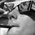

|
• SMS, h 01:31
• SMS, h 12:40
Wien (A), eclissi h 12:43
Il sole sta coprendosi... luce magica, Stephansplatz.
Il buio scende, il Duomo sovrasta la gente in piazza...
Brividi...
Luce livida.
«La fine del mondo».
h 12:47
142 giorni, 11 ore e 13 minuti al 2000.
Raggiunta la massima oscuritò. Inizia il ritorno del sole.
Un po' come quelle scene cinematografiche girate alla luce e scurite in postproduzione per simulare la notte.
Incroci di fine millennio, davanti a noi un conto alla rovescia scandisce i minuti al 2000. Sono contento di essere qui, nel 99, a Vienna, chiesa gotica mai stata così imponente e cupa...
Brividi.
Luca intervistato per la televisione austriaca ORF.
Our inexorable present onlime! pure in televisione all'estero (porcatroia) e su pellicole di mezzo mondo: seduti in mezzo alla piazza abbiamo impresso pellicole europee e asiatiche... in viaggio per conto dell'eclissi.
La piazza inizia a svuotarsi... pecoroni davvero, anche di fronte al cielo.
Inviato SMS in lista, sintesi totale: tutto quello che ho scritto su queste pagine e anche di più in 163 caratteri.
Il sole sta tornando, la vita continua, la gente è di nuovo in movimento, noi ancora seduti in piazza.
Sono contento di noi stessi... attimi di pompini a vicenda.
• SMS, h 13:12
• SMS, h 13:14
h 13:20
Il sole ricorda molto la luna dei fumetti, fatta così:
«Manca solo Lupo Alberto» dice Josto.
Telefonata di mamma-jo, sembra proprio che la ns zona sia stata tra le migliori... inviati per conto dell'eclissi davvero.
Qui le donne un filmato: 25 al secondo.
Il senso delle dimensioni, il sole a milioni di kilometri, la luna a 300mila... una palla di roccia grigia, infinitamente più piccola della stella infuocata, riesce a coprirla e a togliercela dallo sguardo. Noi minuscoli spettatori, inermi e indifesi col naso verso l'alto assistiamo ad uno spettacolo che segue ritmi universali.
La luna, il sole nello spazio si muovono lentamente. Un loro incrocio tanto casuale quanto naturale diventa per noi microbi virali la fine del mondo, l'oscuramento, una fonte di brivido e di ineluttabilità.
Questo è il ns dio.
h 13:43
Oramai siamo alla fine.
La fase di lento ritorno alla visibilità del sole è stata forse la migliore. Abituati alla particolare visione risulta facile vedere i due pianeti nello spazio.
È un viaggio, un vero viaggio nello spazio...
I nostri occhiali improvvisati al momento riscuotono successo... abbiamo provato dei Kodak di una coppia di francesi: de paura. Erano sconvolti da quanto i ns fossero così... adeguati!
h 14:07
Il sole è intero. L'ultima eclissi del millennio è finita ora.
Ecco i miei occhialini! I migliori, più validi di qualsiasi altro occhiale con montatura in cartoncino. Provato e garantito!
• SMS, h 14:07
|

|